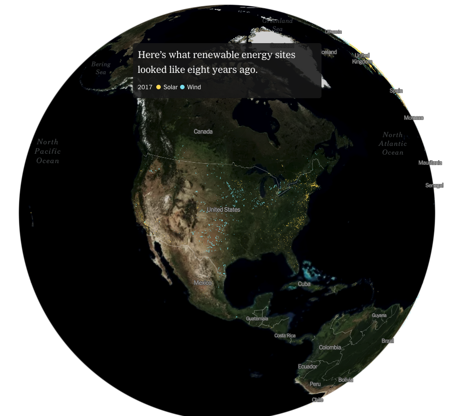
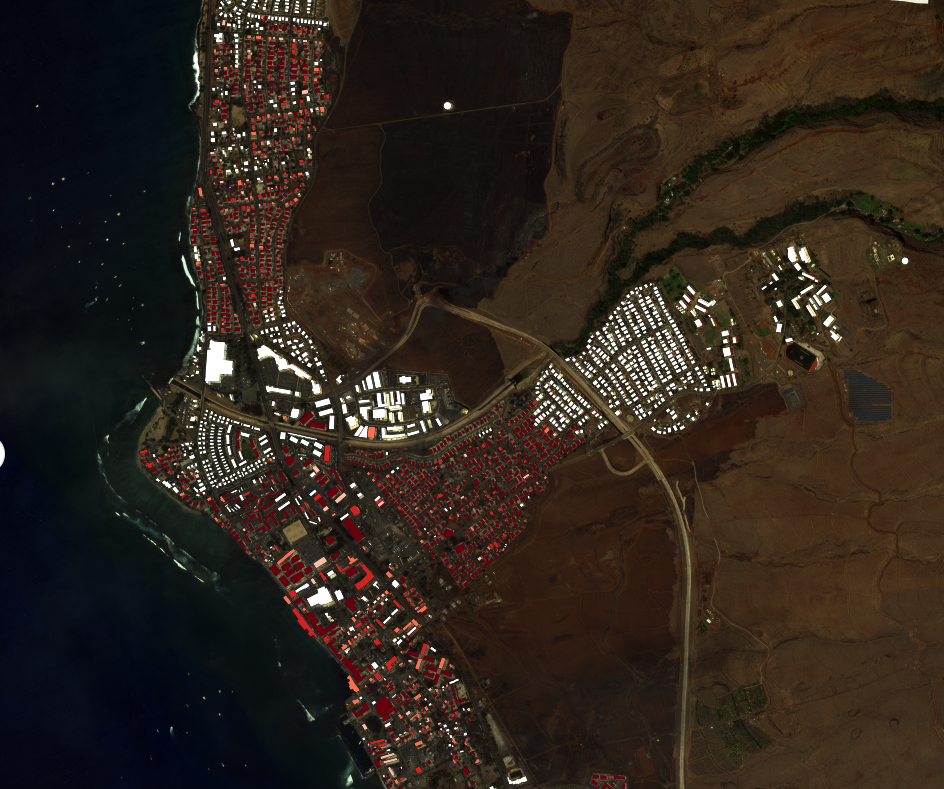
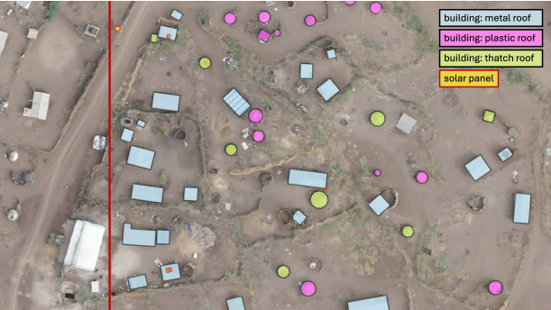
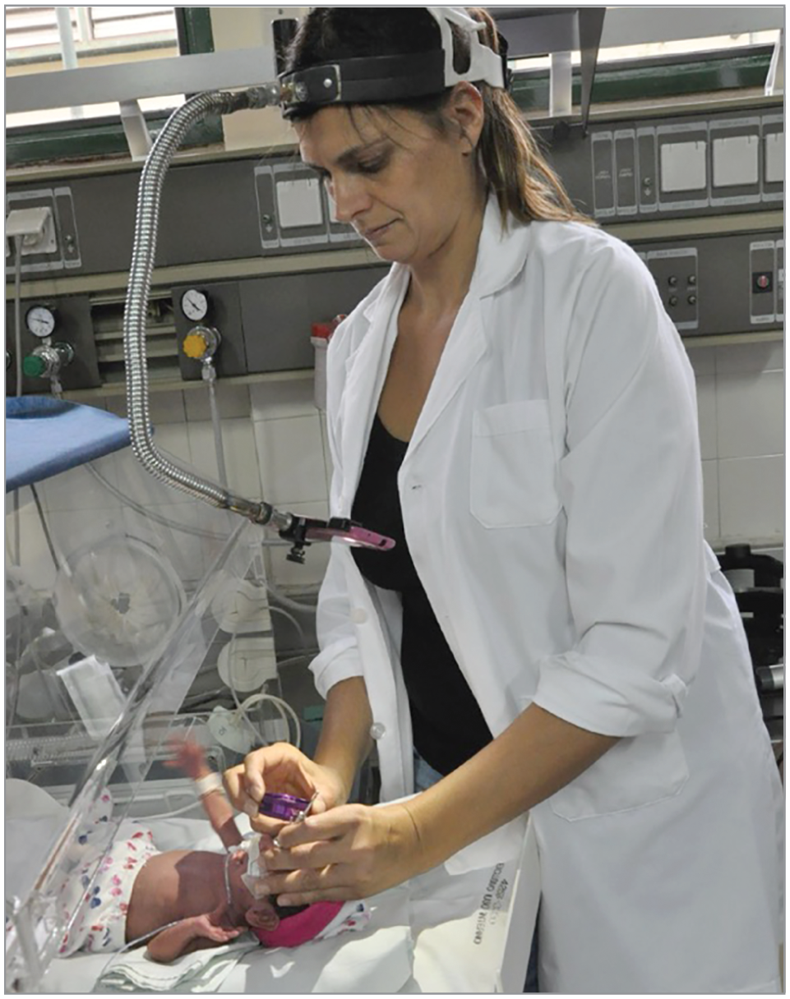

Geospatial ML · Open Source
TorchGeo
A PyTorch domain library for geospatial data — datasets, samplers, transforms, and pretrained models that make Earth-observation deep learning as easy as torchvision.

Principal Research Science Manager · Microsoft AI for Good Lab
I lead and conduct research at the intersection of machine learning, computer vision, and remote sensing, with a focus on applying AI to problems that matter for people and the planet — from geospatial machine learning and Earth observation to medical imaging and humanitarian response.
My work sits at the intersection of machine learning, computer vision, and remote sensing, with deep collaborations across health, sustainability, and humanitarian partners. I co-lead Microsoft’s Geospatial Machine Learning Center, and also do fundamental research on generalization, transfer learning, conditional computation, and domain adaptation.
AI researcher in geospatial machine learning, medical imaging, and computer vision in support of Microsoft’s AI for Good initiatives.
Conditional image generation with GANs for synthetic satellite imagery.
Model generalization, human-machine collaboration, transfer learning, and land-cover mapping with Nebojsa Jojic and Dan Morris.
Mila · University of Montréal
Generalization, variational inference, and remote sensing for social good with Yoshua Bengio.
Intelligent Agents and Strategic Reasoning Lab, UTEP
Conditional computation, adversarial ML, generative modeling and geospatial analytics with Christopher Kiekintveld.
Projects I’m proud of. See Research for more and Publications for the full list.
A PyTorch domain library for geospatial data — datasets, samplers, transforms, and pretrained models that make Earth-observation deep learning as easy as torchvision.


Open-source pipeline that turns post-event satellite imagery into building-damage estimates within hours — deployed across 30+ responses spanning floods, earthquakes, wildfires, hurricanes, and tornadoes, with results browsable in our public visualizer.

AI-assisted mapping of the Kakuma and Kalobeyei refugee settlements in Kenya from drone and satellite imagery — with UNHCR and Humanitarian OpenStreetMap Team — to improve infrastructure planning, services, and energy access for displaced communities.

Deep-learning system to triage ROP from neonatal fundus images, validated in clinical settings where pediatric ophthalmologists are scarce.

National-scale dataset built from satellite imagery to inform renewable-energy policy and siting decisions.

Open data and ML to monitor the Hindu Kush Himalaya glaciers — work funded by an $18K Microsoft AI Research Grant.

Very-high-resolution satellite imagery + deep learning for biodiversity and wildlife monitoring at scale.

A drop-in normalization layer that improves generalization of dense-prediction networks across geographies.
Hand-picked highlights. Full list with year-grouped filters on Publications.
University of Texas at El Paso (UTEP) · 2015–2020
Pontificia Universidad Católica Madre y Maestra (PUCMM) · 2010–2014
Selected interns and students I have had the privilege to mentor — current roles in parentheses.
anthony.ortiz [at] microsoft [dot] com
Microsoft AI for Good Lab
Redmond, WA, USA